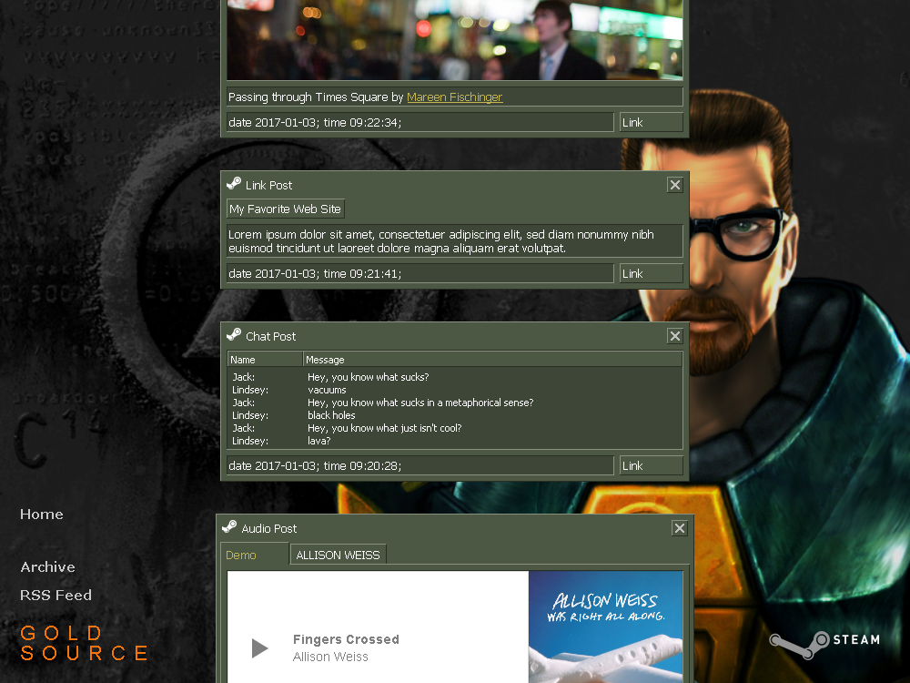

GOLD SOURCE
A theme for fans of classic first-person shooters and those who love sharp rectangular shapes!
Well, it looks like I finally finished the overhaul. I doubt I can add anything more nor do I have any desire left.
For some reason Tumblr thinks the HTML code is invalid (searching around I found out that I’m not the only one), so I can’t submit it. This means that you have to install it manually.
To manually install the theme…
- download the theme from here
- open the text file with a text editor of your choice
- select and copy all the code
- go to the customization page of your blog and click “Edit HTML”
- delete all the code there and paste the code of the Gold Source theme
- click “Update Preview” and after it finishes loading click “Save”
The theme features…
- partial localization
- rich customization options
- sound effects
- support of all post types
…and probably something else.
Hope you like it.